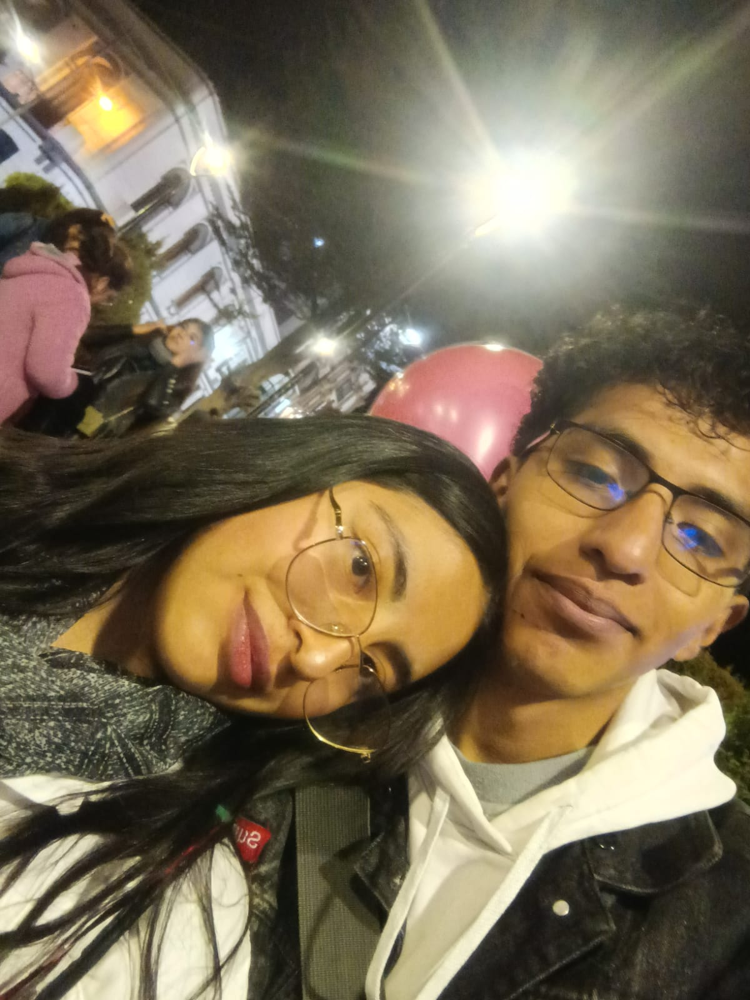
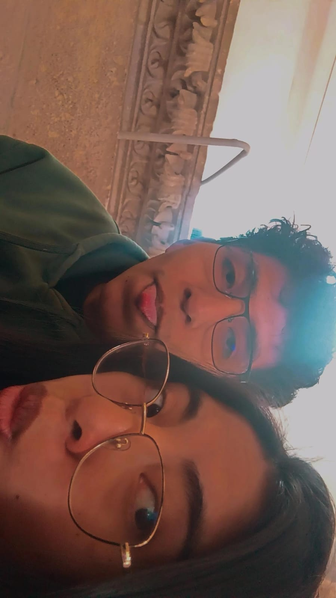

FELIZ CUMPLEAÑOS
29 de Octubre
Que este nuevo año te traiga todo lo bonito que te mereces
Cada momento contigo es especial
El café que prefiero siempre será verte a los ojos sin que nadie te haga sentir mal
Eres mi biker preferida
Eres mi perra preferida
Los lugares que conozco contigo son lugares a los que volvería pero solo con mi mejor amiga

Cada salida contigo se vuelve mi momento favorito
especial

Aunque salgamos poco cada salida contigo vale oro
Siempre me haces feliz
Siempre saco una sonrisa contigo
Tus payasadas siempre son las mejores
No debo de perderte
Aunque salgamos poco las salidas contigo son las más especiales para mí
Cada recuerdo contigo vale oro